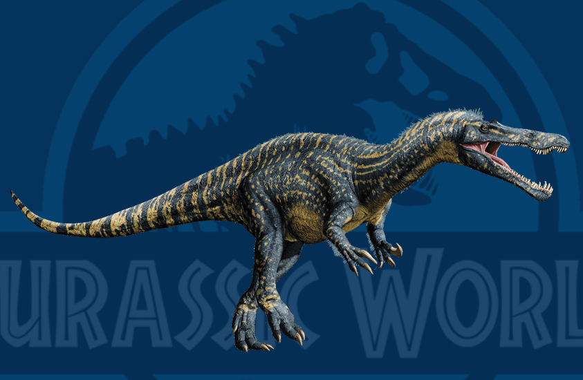

Suchomimus
The only species named in the genus is Suchomimus tenerensis.
- Scientific Name: Suchomimus tenerensis.
- Length: 34–36 ft
- Stage: Cretaceous period
- Age: 121–113 million years ago
Suchomimus was placed in the Spinosauridae, a group of large predators with jaws adapted for hunting fish and with flatter skulls when compared to other similarly-sized theropods, like the Tyrannosauridae. Their teeth were adapted for grasping rather than slicing and the roof of the mouth was more solid, allowing the spinosaurids to resist twisting forces exerted by prey. The rest of the body was not particularly adapted to the water.